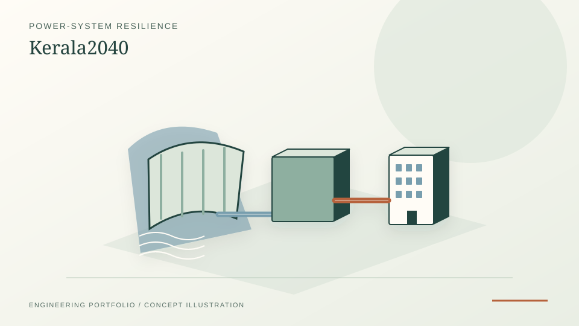

354/365 FY2024-25 SLDC daily reports available; 11 missing.
Independent research · Kerala power-system resilience · 2026
Kerala2040: diagnosing power-system stress before prescribing infrastructure.
An open, diagnosis-first investigation of whether Kerala's electricity-system stress is primarily driven by annual energy, difficult hours, hydropower timing, dependence on external transfers, internal transmission constraints, or the interaction among them. This work demonstrates how I trace uncertain observations into explicit model assumptions and test competing explanations before drawing infrastructure conclusions.
PythonPyPSAOSeMOSYSERA5HiGHSGISpytest

PROJECT REFERENCE / KERALA2040353 observed daily consumption targets matched to complete same-day ERA5 records.
Measured multi-year hourly demand remains unavailable; source and screening boundaries are explicit.
8,760 hweather-sensitive chronology
96.87%hydro-timing sensitivity reduction
233source-backed primary lines screened
2 frameworksPyPSA ↔ OSeMOSYS cross-check
Problem statement
Why a diagnosis-first study is necessary.
Kerala2040 began as a broad future-energy-pathways project. As the evidence base expanded, a more basic problem became clear: a future infrastructure prescription is difficult to defend until the present vulnerability is separated into its constituent mechanisms.
Annual electricity balance alone cannot distinguish a system that lacks energy from one that becomes constrained during particular hours, seasons, hydro conditions, transfer states or network configurations. The project therefore treats demand chronology, hydropower, external transfers and the internal network as separate but interacting hypotheses.
Research question
The question tested by the current project.
Is Kerala's present power-system vulnerability better explained by annual energy scarcity, the timing and shape of demand, hydropower availability, interstate transfer dependence, internal transmission constraints, or an interaction among these mechanisms?
The project does not claim to reconstruct the exact cause of a particular 2026 load-shedding event. The available public data are insufficient for an event-level operational post-mortem.
Evidence architecture
Observation, derivation and modelling are kept separate.
Observed / source reported
Official electricity statistics, SLDC daily records, published transfer values and source-backed network records are retained with provenance and missingness visible.
Derived from observations
Matched-date growth, reconstructed chronology, crosswalks and other transformations remain traceable to the records from which they are derived.
Screening models
PyPSA, OSeMOSYS, hydropower timing and network sensitivities are used to test mechanisms. Numerical agreement is treated as an implementation check, not physical validation.
Candidate responses
Storage, renewable, flexibility and infrastructure options enter only after a vulnerability mechanism has been identified; they are not assumed to be the answer in advance.
Numerical evidence
The strongest quantitative signals in the current study.
| Question | Current evidence | Interpretation boundary |
|---|---|---|
| Demand growth | Official broad electricity consumption rises from 22,540.32 MU in FY2020–21 to 29,311.76 MU in FY2024–25. The audited SLDC archive shows 24.1% growth across 356 matched calendar dates between FY2020–21 and FY2025–26. | Accounting boundaries differ between official series; the matched-date result is kept separate from annual totals. |
| Hourly chronology | The 8,760-hour reconstruction preserves all 354 observed FY2024–25 daily energy totals exactly; 11 missing days remain model-only. On held-out Jan–Mar 2025 extrema, MAE improves from 367.9 MW to 124.9 MW and correlation from 0.659 to 0.968. | This is improved chronology reconstruction, not continuous measured-hour validation. |
| Hydro timing | In the reference-demand / 4,455 MW transfer-capability screening case, shifting the same daily hydro MWh within the day reduces modelled unserved energy from about 375.03 GWh to 11.75 GWh. | A 96.87% timing sensitivity, not a validated reservoir operating rule. |
| External transfer | Stress rises sharply when the assumed interstate-transfer ceiling is reduced below the dated 4,455 MW ATC benchmark. | Transfer values are scenario assumptions tied to dated public benchmarks, not a real-time capability forecast. |
| Internal network | Across eight radically different residual-import allocations, 21 of 233 source-backed primary lines remain overloaded in every case, forming 12 robust corridor groups. | A robustness screen, not calibrated AC load-flow or N-1 security analysis. |
Network result
Robustness matters more than a single assumed import allocation.
A public-data network screen cannot reproduce system-operator state estimation. To reduce dependence on one arbitrary spatial allocation, the study instead tests eight deliberately different residual-import distributions. Lines that overload only under one allocation are weak evidence. Lines that overload across all eight allocations are more useful as candidates for further investigation.
Twenty-one lines remain overloaded in all eight cases, forming 12 robust corridor groups. Shornur 220/110 kV is the strongest multi-voltage hotspot in this screening framework. The result identifies where better data and engineering study would be most valuable; it does not establish an upgrade prescription.
Methodology
One research stack, several independent checks.
Historical electricity audit
SLDC and other official/public records are checked before modelling. Missing dates, duplicated records and accounting-boundary differences are preserved rather than silently repaired.
Weather-sensitive chronology
ERA5 variables support an hourly demand reconstruction while observed daily SLDC energy totals are preserved where they exist. Model-only days remain explicitly marked.
Adequacy and flexibility screening
PyPSA tests demand, transfer, renewable and hydro-flexibility mechanisms. Where applicable, an independently implemented OSeMOSYS formulation provides a numerical consistency check.
Network robustness
Public network records are reconstructed and stressed under multiple residual-import allocations to identify corridors that remain problematic despite allocation uncertainty.
Hydro and spatial context
Hydro, terrain, official boundaries, ecological layers and hazard information are used to constrain interpretation of future responses rather than being treated as decorative GIS layers.
PythonPyPSAOSeMOSYSHiGHSERA5GISpandaspytestCIEvidence provenance
Working synthesis
The evidence does not support one simple statewide annual-energy explanation.
The current evidence supports a more conditional interpretation: Kerala's susceptibility to power-system stress appears to emerge from the interaction of weather-sensitive peak demand, dependence on external electricity, hydropower timing and availability, and internal transmission constraints.
That distinction matters because different mechanisms imply different responses. More annual renewable energy does not automatically solve a transfer bottleneck, a difficult evening peak, a constrained corridor or a hydropower-timing problem.
Interpretation
What this study can and cannot support.
Public data are sufficient to test whether chronology, transfer assumptions, hydro timing and network allocation materially change system stress.
The current evidence base cannot reproduce dispatch-room state estimation, validated reservoir operation, N-1 security or legally complete siting analysis.
Limitations and future work
Where stronger data or modelling would change the confidence level.
Demand telemetry
The 8,760-hour series is reconstructed from daily observations and weather-sensitive shape information; it is not measured statewide hourly telemetry.
Hydro operation
Hydro-flexibility results are sensitivities rather than validated reservoir rule curves. The present Idukki water-balance residual is not observed catchment inflow.
Transmission model
Public-network overloads are screening results, not calibrated AC power flow, contingency analysis, upgrade sizing or investment evidence.
Future system design
Renewable profiles remain resource proxies, statutory siting constraints are incomplete, and a full least-cost reliability expansion model remains future work.
Research conclusion
The useful result is a narrower question for the next model.
Kerala2040 does not currently conclude that one technology or one infrastructure project is the answer. Its main contribution is to reduce the space of plausible explanations and show where the next layer of evidence should be collected.
The next research step is therefore not a larger scenario catalogue for its own sake. It is a better-constrained model of difficult hours, transfer dependence, hydro flexibility and robust internal corridors, followed by candidate responses tested against those identified mechanisms.